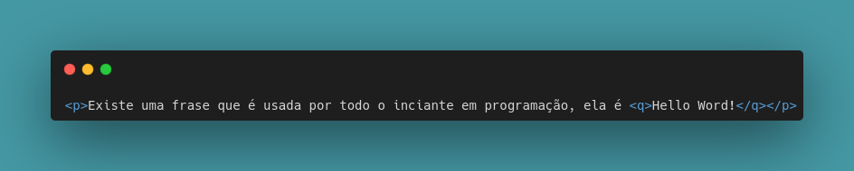
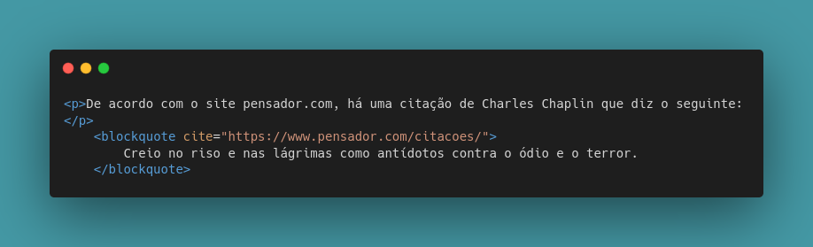
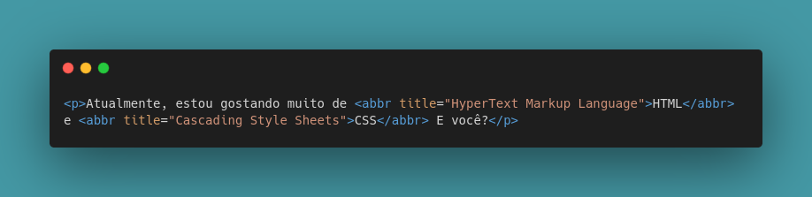
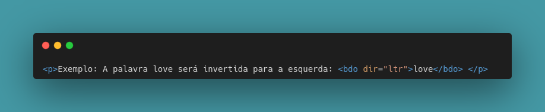

Código-fonte nada mais é podermos demonstar códigos de linguagens de programação em um documento HTML!
Para que possamos fazer isso, usamos a tag code, onde dentro dela, colocamos o código que queremos demonstrar.
Com ela, nosso código se torna monoespaçado, ou seja, os espaços distribuidos pelas letras se tornam iguais fazendo com que nosso texto fique visualmente melhor de ser visto e interpretado.
Exemplo: O comando document.getElementById('teste') é escrito em JavaScript.
Nota-se como o código ficou bem identado e com a formatação ideal de espaçamento.
Veja um exemplo sem a tag code:
Exemplo: O comando document.getElementById('teste') está em JavaScript.
Faça a comparação e veja a diferença!
Dê uma olhadinha no código - Usando a tag code: 👀

Entretanto.. Se fizermos uma demonstração de código que é necessário de uma identação maior e não é apenas demonstrado em uma linha apenas - como acima -, ou seja, uma série de códigos que se interligam, apenas a tag code não irá conseguir fazer a demonstração certa!
Vamos ver abaixo uma demonstração de código da linguagem Python.
Exemplo apenas com a tag CODE:
num = int(input("Digite um número: "))
if num % 2 == 0:
print("O número {} é PAR".format(num))
else:
pritn("O número {} é ÍMPAR".format(num))
print("Fim do Programa!")
Percebe-se que os código em Python não ficaram identados como deveriam ficar. Ficam postos um na frente do outro, sem nenhum tipo de formatação.
Para resolvermos esse tipo de problema, usamos então a tag pre e dentro dela, colocamos a tag code com os códigos que queremos demonstrar.
Exemplo do uso da tag pre:
num = int(input("Digite um número: "))
if num % 2 == 0:
print("O número {} é PAR".format(num))
else:
pritn("O número {} é ÍMPAR".format(num))
print("Fim do Programa!")
Agora sim, nosso código ficou identado e bem feito!
Dê uma olhadinha no código - Usando a tag pre: 👀
.png)
Uma dica! 😄
Caso você queira tirar o espaço que fica atrás dos códigos, é só seleciona-los e apertar as teclas shift+tab em conjunto. E caso você ainda queira um espacinho, selecione tudo e clique na tecla tab.
Para podermos adicionar citações em nosso texto, usamos a tag q de quotations. Essa tag irá colocar na frase em que adicionamos esta tag aspas, dando ideia de citação mesmo.
Mas por que simplesmente não usamos aspas normamelmente sem precisar de usar a tag q? 🤔
Porque quando usamos a tag q o nosso código fica bem mais semântico, com significado. Por isso, a tag q é usada apenas para citações simples.
Se tivermos um texto em que precisamos usar aspas mas este pedaço de texto não é uma citação, não precisamos usar a tag q, podemos e devemos colocar as aspas manualmente.
Usando a tag q:
Existe uma frase que é usada por todo o inciante em programação, ela é Hello Word!
Dê uma olhadinha no código: Usando a tag q: 👀
As citações completas são as famosas citações em blocos. Nela, nossaas citações ficarão em blocos com um poquinho de espaçamento atrás delas.
Para que façamos isso, usamos a tag bockquote!
Antes de demonstrar como ela fica sendo usada e o como o código fica, há na tag blockquote uma funcionalidade chama "cite". Esse parametro é para que coloquemos o link de onde tiramos essa citação, assim, o google vê que tiramos ela de algum lugar e consquentemente fornecemos os créditos a quem fez tal citação. No entanto, esse parametro cite não da nenhuma interação para quem vê o corpo do texto, a sua interação é por baixo dos panos, como dito anteriormente.
Usando a tag blockquote:
De acordo com o site pensador.com, há uma citação de Charles Chaplin que diz o seguinte:
Creio no riso e nas lágrimas como antídotos contra o ódio e o terror.
Dê uma olhadinha no codigo: Usando a tag blockquote: 👀
Quando em nosso texto, escrevemos palavras em sua forma abreviada, não adicionamos o significado daquela abreviação. Há uma tag que podemos adicionar o significado da apreviação que nos mostrará esse significado quando passarmos o cursor do mouse em cima desta abreviação.
Está tag se chama abbr!
Usando a tag abbr:
Atualmente, estou gostando muito de HTML e CSS E você?
Se observarmos, fica com alguns detalhes embaixo das abreviações dependendo do seu navegador, mas isso pode ser resolvido no CSS.
Dê uma olhadinha no código: Usando a tag abbr: 👀
Temos também a tag bdo, na qual, deixa nosso texto invertido.
Quando a adicionamos, ela vem com duas opções: bdo:l e bdo:r, que quer dizer, esquerda ou direita.
Iremos utiliza-la agora usando os dois modos:
Exemplo: A palavra love será invertida para a esquerda: love
Dê uma olhadinha no código: 👀
